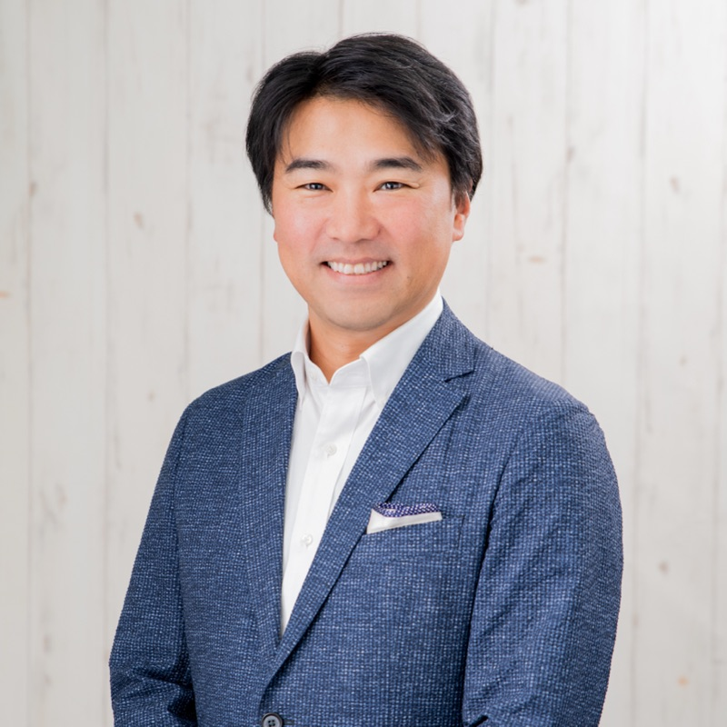
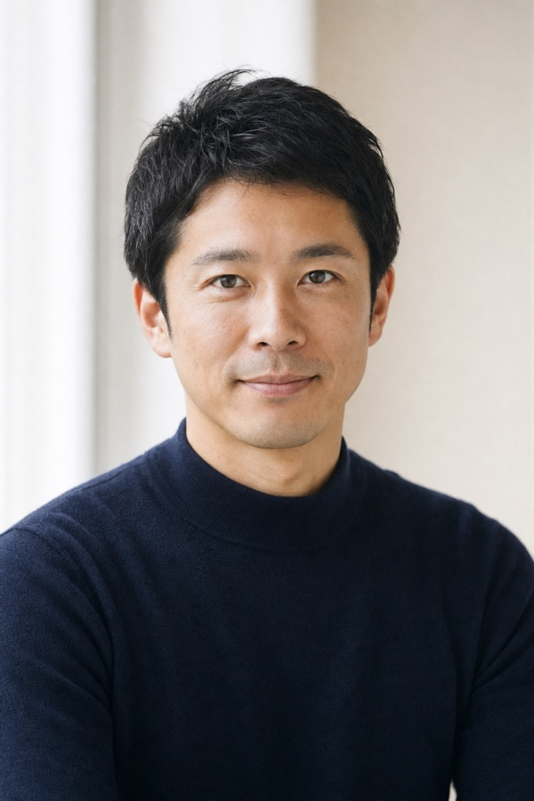
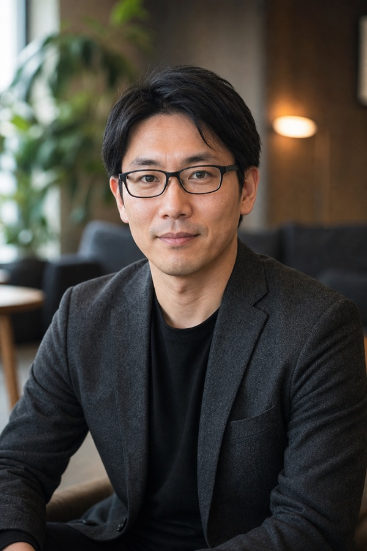

現役の経営者と、直接話せる
担当はエージェントではありません。いま自ら会社を経営している人間が、机上のアドバイスではなく、経営の現場の本音であなたの相談に乗ります。
CxO エージェント
経営を目指す人の、キャリアの相談相手
役職や年収の先にある“経営そのもの”へ。
現役の経営者が壁打ち相手になり、転職・副業・経営参画まで、
あなたの次の一歩を一緒に描きます。
応募でも、選考でもありません。経営に近づく次の選択肢を、まずは30分で一緒に整理します。


年齢・業界よりも、「経営に近づく意志があるかどうか」を大切にしています。
実力は認められている。それでも、社内で経営ポジションに上がるルートが描けない。このまま年次を重ねていいのか、ふと立ち止まる瞬間がある。
一つの会社・職種で積み上げてきた力を、もっと経営に近い場所で試したい。守りに入るより、まだ伸びしろを取りに行きたい。
独立や起業も選択肢にある。でも、何から始めればいいのか、誰に相談すればいいのか分からない。その前に、経営の現場を内側から知っておきたい。
“いい求人”を渡すだけでは、経営には近づけない。だから私たちは、求人を紹介して終わりにしません。 いま自分の会社を経営している人間が、あなたと正面から向き合う。きれいごと抜きの本音で経営を語れる場を、ここに用意しました。
担当はエージェントではありません。いま自ら会社を経営している人間が、机上のアドバイスではなく、経営の現場の本音であなたの相談に乗ります。
CxO など経営ポジションを目指すキャリアを、いまの現在地から逆算して一緒に設計します。
経営者同士のつながりから、通常の求人市場には出てこない経営の場・ポジションをご紹介します。
私たちが扱うのは「経営に近いポジション」だけ。
CXO・経営幹部から、経営企画・新規事業、副業・顧問まで。

代表取締役CEO
野上 隆徳
Beyondge株式会社
事業をゼロから立ち上げ、伸ばし、ときに畳む。その全部を当事者として経験してきました。きれいごとではない経営の話をします。
相談できること経営・CXO／連続起業の実体験／事業の立ち上げから撤退判断まで
向いている相談事業の立ち上げ・拡大に挑みたい方
※ ご紹介する求人の一例（想定イメージ）です。年収1,000万円以上の経営ポジションを中心にご案内します。実際のご提案は面談のなかで個別に。
想定年収1,500〜2,000万円
代表直下で事業全体を統括。業務委託から参画し、成果次第で正社員も。
想定年収1,500〜2,500万円
資金調達・管理体制の構築をリード。上場準備フェーズの中核。
想定年収1,200〜1,800万円
新規事業をP/L責任者として推進。経営会議メンバーとして参画。
想定年収1,300〜1,800万円
全社戦略・M&A・IRを担う。経営トップの右腕ポジション。
想定年収1,200〜2,000万円
後継者または右腕として経営を担う。正社員での参画。
想定年収1,000〜1,500万円＋SO
経営メンバー候補。副業・業務委託からのスモールスタートも可。
無料相談は1分。その後はあなたの希望に合わせて、2つのルートでご支援します。
氏名・メールアドレス・希望区分のみ。職務経歴の入力は任意です。まずは気軽に。
「正社員での転職」か「副業・顧問での参画」か。ご希望に合わせて進め方が分かれます。
現役経営者があなたの経歴・志向をヒアリングし、求人票に出ない経営ポジションを厳選してご案内します。
選考の調整から条件交渉、参画・入社後の立ち上がりまで、専任で伴走します。
現役経営者でもある専任コンサルタントとのキャリア面談を設定。市場価値の整理からキャリア設計まで、じっくり伴走します。
マッチする案件が出たタイミングで、メールでお届けします。気になる案件があれば、そこから面談へ進みます。
※ 実際のご相談を想定したケース例です（写真はイメージ）。実際の支援実績が確定しだい差し替えます。
Aさん（30代）
SaaS企業で事業企画を担当。求人を一方的に紹介されるのではなく、事業づくりに当事者として関わる働き方を模索されていました。
現役経営者との壁打ちを重ね、いまの強みと、経営に必要な経験のギャップを言語化。求人票には出ていない、事業会社のCOO候補のポジションをご紹介しました。
まずは業務委託として経営の意思決定に関わり、成果を見ながら正社員での参画も視野に入れる形で、キャリアの次の一歩を決められました。
Bさん（30代）
大手メーカーで事業推進を担当。安定はしているものの、いまの延長線上にない挑戦の機会を探されていました。
経営者との対話のなかで、これまでの推進力を活かせる新規事業の現場を整理。現職を続けながら、副業・業務委託で経営に近い役割に踏み出す選択肢をご提案しました。
地方企業の新規事業責任者として、経営会議にも参加しながら参画。転職せずに経営に近づく、新しいキャリアの形を実現されました。

※画像はイメージですCさん（20代）
コンサルタントとして実績を積む一方、「分析する側」から「意思決定をする側」へ移りたいという思いを持たれていました。
経営者とのキャリア面談で、志向と現在地を整理。経営に踏み込める環境として、スタートアップの経営企画ポジションをご案内しました。
市場にはあまり出回らない、経営の中枢に近いポジションへ。経営者の目線でキャリアを設計したことで、次の挑戦に踏み出されました。

※画像はイメージです応募でも、選考でもありません。まずは話すことから。匿名でのご相談も承ります。